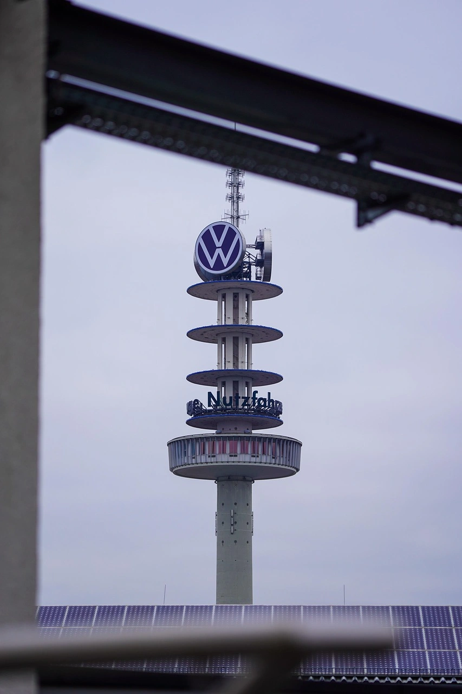
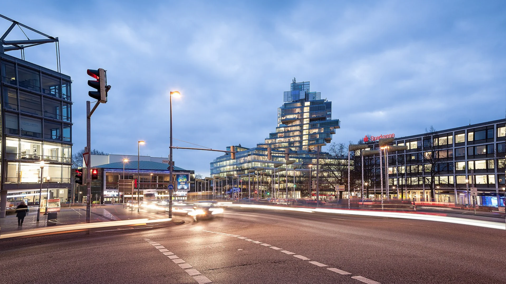

Aegidientorplatz, Hannover
Volkswagen tower, Hannover
Fototour Hannover – Stadterlebnis im Fokus
Erlebe Hannover aus einem neuen Blickwinkel. Auf dieser Tour erkundest du touristische Highlights, architektonische Details und versteckte Ecken der Stadt – immer mit der Kamera im Anschlag. Zwischen historischen Gebäuden, modernen Stadtlandschaften und lebendigem Alltag entstehen authentische Aufnahmen, die das urbane Leben in all seinen Facetten zeigen.
Ort: Hannover
Termine: Wöchentlich – jeweils samstags
Dauer: ca. 3–4 Stunden
Das erwartet dich:
Stadtmotive mit Geschichte: Vom Neuen Rathaus über die Altstadt bis zu den Herrenhäuser Gärten – bekannte und versteckte Sehenswürdigkeiten entdecken.
Fotografie in Bewegung: Menschen im Stadtraum, Architektur und Lichtstimmungen kreativ in Szene setzen.
Individuelle Perspektiven: Deinen fotografischen Stil entfalten – Reportage, Street oder Detailaufnahme.
Begleitung durch erfahrenen Guide: Tipps zur Motivwahl, Bildaufbau und Kameraeinstellungen.
Für Einsteiger und Fortgeschrittene: Wichtiger als Technik ist der Spaß am Sehen und Entdecken.
Hinweis: Die Tour findet bei jedem Wetter statt. Bei Sonne, Regen oder Dämmerung entstehen unterschiedliche Bildwelten.
Unser Treffen
Zoom

Aegidientorplatz, Hannover
Volkswagen tower, Hannover
Fototour Hannover – Stadterlebnis im Fokus
Erlebe Hannover aus einem neuen Blickwinkel.
Auf dieser Tour erkundest du touristische Highlights, architektonische Details und versteckte Ecken der Stadt – immer mit der Kamera im Anschlag.
Zwischen historischen Gebäuden, modernen Stadtlandschaften und lebendigem Alltag entstehen authentische Aufnahmen, die das urbane Leben in all seinen Facetten zeigen.
Ort: Hannover
Termine: Wöchentlich, jeweils samstags
Dauer: ca. 3–4 Stunden
Das erwartet dich:
Stadtmotive mit Geschichte: Vom Neuen Rathaus über die Altstadt bis zu den Herrenhäuser Gärten – bekannte und versteckte Sehenswürdigkeiten.
Fotografie in Bewegung: Menschen, Architektur und Lichtstimmungen kreativ inszenieren.
Individuelle Perspektiven: Deinen eigenen fotografischen Stil entwickeln – Reportage, Street oder Detailaufnahme.
Begleitung durch erfahrenen Guide: Tipps für Motivwahl, Bildaufbau und Kameraeinstellungen.
Für Einsteiger und Fortgeschrittene: Spaß am Sehen und Entdecken steht im Mittelpunkt.
Hinweis: Die Tour findet bei jedem Wetter statt. Lichtstimmungen variieren je nach Wetter und Tageszeit.
Unser Treffen
Zoom